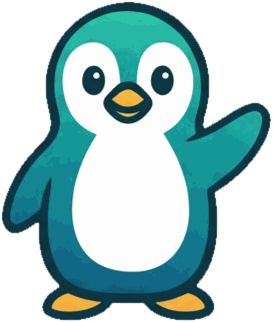
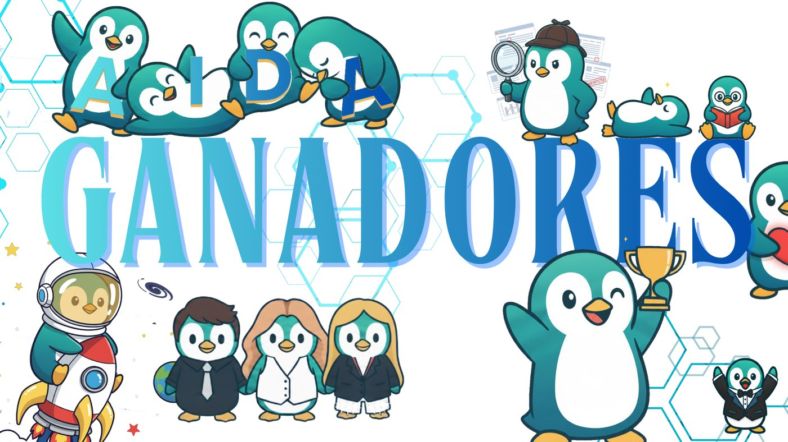

Conversación natural
Preguntá como le preguntarías a una persona. AIDA entiende el contexto, recuerda de qué venían hablando y responde sin vueltas.
Ganador del Capstone Project — Samsung Innovation Campus 2025
AIDA es un asistente conversacional pensado para que nadie quede afuera del mundo digital. Habla claro, escucha audios, reconoce imágenes, detecta estafas y acompaña cada paso sin apurar a nadie.
Hola AIDA, ¿me ayudás con una cosa del celular?
10:24¡Hola, Elena! Claro que sí. Contame tranquila, no hay apuro. 🐧
10:24Escuché tu audio. Querés hacer una videollamada con tu nieta. Te lo explico en tres pasos cortos, y si querés te lo mando también en audio. 🎧
10:25Leí la imagen: te piden un código por SMS y un pago urgente. Es una estafa muy común. No respondas ni pagues. Si querés, aviso a Marta.
10:26
Reconocimiento
AIDA fue elegido el gran ganador del Capstone Project en la edición del Samsung Innovation Campus Argentina especializada en Inteligencia Artificial: meses de formación intensiva y trabajo en equipo para transformar una idea en tecnología que funciona.
«Nos llevamos a casa no solo el primer premio, sino el orgullo de haber creado una solución
con impacto social real, compitiendo contra otros grandes proyectos.»
— Santiago Oroz, en nombre del equipo

El equipo de AIDA, en versión pingüino, festejando el primer puesto.
¿Qué es AIDA?
AIDA nació de una pregunta concreta: ¿cómo ayudamos a alguien que nunca usó un smartphone sin que se sienta perdido, apurado ni tratado como un chico? La respuesta fue un asistente con la paciencia que a veces nosotros no tenemos.
Funciona dentro del chat que la persona ya usa. Se maneja igual que cualquier conversación: escribiendo o mandando un audio. No hay menús raros, ni apps nuevas que aprender, ni pasos que memorizar.
Detrás hay un sistema modular de inteligencia artificial. Adelante hay una sola cosa: alguien que responde bien, las veces que haga falta.
Frases cortas, sin tecnicismos y con ejemplos. Si algo no se entendió, lo vuelve a explicar de otra manera.
Se puede preguntar lo mismo diez veces. AIDA responde igual de bien la décima que la primera.
Revisa mensajes sospechosos, advierte sobre fraudes y puede avisar a un contacto de confianza.
Detecta frustración o tristeza en la conversación y cambia el tono para acompañar mejor.
Funciones
Cada función resuelve un problema real del día a día con la tecnología. Ninguna está para lucirse: todas están para que la persona pueda seguir sola.
Preguntá como le preguntarías a una persona. AIDA entiende el contexto, recuerda de qué venían hablando y responde sin vueltas.
Mandá una nota de voz y AIDA la entiende. Si preferís escuchar en lugar de leer, te contesta con su propia voz, y podés elegir cuál.
Sacá una foto o mandá una captura. AIDA describe lo que ve, lee el texto que aparece y lo explica en palabras simples.
¿Un mensaje raro, un premio inesperado, alguien que pide un código? Mandáselo a AIDA y te dice si parece legítimo o si es una trampa.
Un modelo entrenado en español rioplatense detecta enojo, frustración o tristeza en los mensajes, y AIDA ajusta su tono para acompañar.
Ante señales de riesgo, AIDA puede enviar automáticamente un aviso por correo a un familiar o contacto de confianza previamente configurado.
La primera vez, unas pocas preguntas ayudan a AIDA a conocer el nivel de autonomía, los intereses y el entorno de cada persona.
Más de 35 preguntas frecuentes sobre tecnología cotidiana ya resueltas: se responden al instante, sin depender de la conexión con el modelo.
Si alguien escribe en otro idioma, AIDA lo detecta y le responde en ese mismo idioma. No hay nada que configurar.
Cómo funciona
No hay que instalar nada especial ni crear una cuenta nueva. Con la app de mensajería que la persona ya tiene, alcanza.
Buscás a AIDA y le escribís, como a cualquier contacto. Sin registros ni formularios.
AIDA hace unas preguntas breves para conocerte: cómo te llamás, qué te interesa y cómo preferís que te responda.
Por texto, por audio o mandando una foto. Todas las veces que necesites, sin que nadie se impaciente.
Con el tiempo recuerda tus preferencias y ajusta cómo te habla para que cada conversación sea más fácil que la anterior.
Próximamente · App para Android
Estamos preparando una aplicación para celulares Android. AIDA se queda en la pantalla como una burbuja con la cara del pingüino: la tocás mientras usás WhatsApp, el correo o cualquier otra aplicación, le preguntás, y mira lo que tenés adelante para decirte qué tocar. En voz alta.
Se configura una sola vez. La primera vez que se abre guía paso a paso, un permiso por pantalla y explicando para qué sirve cada uno. Está pensada para que la deje lista un hijo, una hija o un nieto, y que después no haya que volver a tocar nada.
Todavía no está en Google Play. La estamos probando en teléfonos reales antes de publicarla. Si te anotás en la lista de espera, te avisamos el día que salga.
Queda en un costado de la pantalla, encima de cualquier aplicación. Se arrastra para correrla de lugar, y llevándola hasta la equis se saca.
Cuando la tocás, ve lo que tenés adelante y te dice qué tocar con las palabras que usás vos: «el avioncito», no «el botón Enviar».
Con voz y a la velocidad que elijas. Si el teléfono está en silencio, te avisa y te muestra la respuesta escrita.
Para las preguntas que no son sobre la pantalla: le escribís o le hablás, y la conversación sigue donde había quedado.
Si el teléfono se apaga, la burbuja vuelve con un solo toque, sin tener que abrir la aplicación ni buscar nada.
La letra y la burbuja se agrandan en cuatro pasos cada una. Y se puede elegir entre modo claro y modo oscuro.
¿Te llegó un mensaje raro? Abrilo, tocá la burbuja y preguntale si es de verdad. Te dice qué le llama la atención, sin asustarte.
En las aplicaciones de banco y billeteras AIDA no ve nada, a propósito. Y las imágenes de tu pantalla no se guardan en ningún lado.
¿Para quién?
Para quienes quieren manejarse solos con la tecnología, a su ritmo, sin que nadie los apure ni los haga sentir mal por preguntar.
Para quienes quieren que su familiar tenga respaldo tecnológico sin depender de una llamada cada vez que aparece una duda.
En movimiento
El video de presentación con el que AIDA se llevó el primer puesto: la idea, el problema que resuelve y el asistente en acción.

Estado del proyecto
Preferimos contar lo que hay antes que prometer lo que falta. Este cuadro se actualiza a medida que avanzamos.
Voz, visión, análisis de sentimiento, alertas y perfiles, integrados en un mismo bot.
Presentación final, defensa ante el jurado y primer premio del certamen nacional.
Llevar el mismo asistente a la app que más usan las personas mayores en Argentina.
La burbuja que acompaña en cualquier aplicación. La estamos probando en teléfonos reales antes de publicarla en Google Play.
Ampliar la base de conocimiento y afinar el lenguaje para que sea aún más simple.
Todavía no hay fecha. Quienes estén en la lista de espera se enteran primero.
Configurar contactos de confianza y preferencias desde afuera del chat.
Equipo
Tres estudiantes del Samsung Innovation Campus con un objetivo compartido: que la tecnología no deje a nadie afuera. No hubo roles separados: los tres hicimos de todo, del código a la presentación final.
Gracias
Por sostener un programa que forma talento joven y lo desafía con problemas reales.
Por acompañar la edición 2025 del Samsung Innovation Campus en Argentina.
Por el espacio de aprendizaje y por su compromiso con la inclusión digital.
Por la mentoría, la paciencia y las herramientas para llevar la idea a la realidad.
Con referentes de Randstad y Streambe, por devoluciones que mejoraron el proyecto.
Por desafiarnos siempre a ir más allá del código.
Preguntas frecuentes
Todavía no está abierto al público y preferimos no dar una fecha que después no podamos cumplir. Si dejás tu correo en la lista de espera, sos de las primeras personas en enterarte.
No. Si sabés mandar un mensaje o una nota de voz, sabés usar AIDA. Todo pasa dentro de un chat común y corriente, sin menús ni configuraciones.
AIDA nació como un proyecto académico sin fines de lucro, dentro del Samsung Innovation Campus. Todavía estamos definiendo cómo va a ser el acceso cuando se abra al público; cuando lo sepamos, lo vas a leer acá.
Se guardan de forma segura en Firebase (Google Cloud) y solo el equipo de AIDA puede verlos. No se venden ni se comparten con terceros, y podés pedir que los borremos cuando quieras.
Está todo detallado en la política de privacidad.
No, y no quiere hacerlo. AIDA acompaña en el uso de la tecnología y puede avisar a un contacto de confianza, pero no da diagnósticos médicos ni asesoramiento financiero. Ante una emergencia hay que llamar a los servicios de emergencia.
En cualquier celular, tablet o computadora donde funcione Telegram: Android, iPhone, Windows, Mac o directamente desde el navegador. La versión para WhatsApp está en desarrollo.
Además estamos preparando una aplicación propia para Android, con una burbuja que acompaña dentro de cualquier otra aplicación. Todavía no tiene fecha de salida.
Por ahora no. En el iPhone ninguna aplicación puede quedarse encima de otra ni ver lo que muestra otra aplicación: es una regla de Apple, no algo que podamos resolver nosotros. En el iPhone, AIDA se sigue pudiendo usar desde Telegram.
Sí, nos interesa mucho. Escribinos a aidaassistantbot@gmail.com y contanos en qué contexto trabajan.
Lista de espera
Estamos terminando de prepararla. Dejá tu correo y te escribimos cuando puedas usarla. Sin spam ni newsletters: un solo mensaje, cuando haya novedades de verdad.